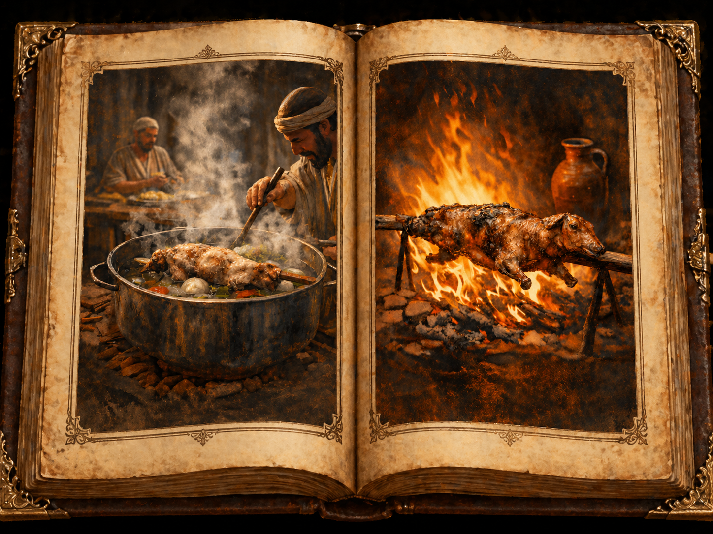

статья Так варим или жарим Пасхального ягненка?
⬧ Сначала в разделе Торы посвящённом законам Песаха мы читаем:
| Шмот 12:9 | Не ешьте его сырым или сваренным в воде, а лишь изжаренным на огне, вместе с головой, ногами и внутренностями. | אַל-תֹּאכְלוּ מִמֶּנּוּ נָא וּבָשֵׁל מְבֻשָּׁל בַּמָּיִם כִּי אִם-צְלִי-אֵשׁ רֹאשׁוֹ עַל-כְּרָעָיו וְעַל-קִרְבּוֹ | שמות י״ב:ט׳ |
А далее мы встречаем иное требование:
| Дварим 16:7 | Свари [мясо жертвы] и ешь его на том месте, которое изберет Яхве, твой Бог. А утром возвращайтесь [к себе], каждый в свой шатер. | וּבִשַּׁלְתָּ וְאָכַלְתָּ בַּמָּקוֹם אֲשֶׁר יִבְחַר יְהוָה אֱלֹהֶיךָ בּוֹ וּפָנִיתָ בַבֹּקֶר וְהָלַכְתָּ לְאֹהָלֶיךָ | דברים ט״ז:ז׳ |
Из данных текстов видно, что мы имеем противоречие, где текст Шмот 12:9 требует → жарки пасхального ягнёнка, а текст Дварим 16:7 требует → варки пасхального ягнёнка. [1]
◊ А что если данные понятия (варки / жарки) взаимно переходящие и само противоречие условно?!
Однако текст Торы прекрасно разделяет виды приготовления пищи. Так мы читаем:
| Шмот 16:23 | Он ответил им: — Об этом и говорил Яхве: завтра — святая Суббота Яхве, [день] покоя. Что [хотите] испечь — пеките, что [хотите] сварить — варите, а все оставшееся отложите до утра. | וַיֹּאמֶר אֲלֵהֶם הוּא אֲשֶׁר דִּבֶּר יְהוָה שַׁבָּתוֹן שַׁבַּת-קֹדֶשׁ לַיהוָה מָחָר אֵת אֲשֶׁר-תֹּאפוּ אֵפוּ וְאֵת אֲשֶׁר-תְּבַשְּׁלוּ בַּשֵּׁלוּ וְאֵת כָּל-הָעֹדֵף הַנִּיחוּ לָכֶם לְמִשְׁמֶרֶת עַד-הַבֹּקֶר | שמות ט״ז:כ״ג |
Следовательно и в законах праздника Песаха тексты (Шмот 12:9/ Дварим 16:7) не подразумевают взаимозамены и наше исходное противоречие требований о жарке (צלי־אש) или варке (בשל) ягнёнка – актуально.
◊ Как Хронист пытается решить эту проблему?
Уже в самом Танахе (תנ״ך) автор Диврей га-ямим (דברי הימים), которого обычно называют Хронистом, явно сталкивается с этим текстуальным противоречием. Решение он предложил следующее: поскольку гармонизировать тексты Торы он уже не мог, то он создаёт искусственную компромиссную конструкцию: «сварили песах на огне» — וַיְבַשְּׁלוּ הַפֶּסַח בָּאֵשׁ. Так он пишет: [2]
| Диврей га-ямим II 35:13 | И сварили агнца-песаха на огне, по уставу; и священные жертвы сварили в котлах, и в горшках, и в кастрюлях, и торопливо раздали всему народу. | וַֽיְבַשְּׁל֥וּ הַפֶּ֛סַח בָּאֵ֖שׁ כַּמִּשְׁפָּ֑ט וְהַקֳּדָשִׁ֣ים בִּשְּׁל֗וּ בַּסִּיר֤וֹת וּבַדְּוָדִים֙ וּבַצֵּ֣לָח֔וֹת וַיָּרִ֖יצוּ לְכׇל־בְּנֵ֥י הָעָֽם׃ | דברי הימים ב ל״ה:י״ג |
Однако: во-первых, проблема такого решения состоит в том, что оно не нормативно по отношению к самим текстам Торы, то есть такого авторы ранних текстов — Шмот 12:9 (Р-источник) и Дварим 16:7 (D-источник) — просто не знали. [3]
Во-вторых, Хронист подаёт свою конструкцию так, как будто это уже и есть норма: כמשפט — «по уставу / по предписанию». Но именно такого предписания в Торе нет. Более того, текст Шмот 12:9 прямо настаивает на запрете варки, то есть именно этот текст скорее ближе к исходной норме — כמשפט, а не конструкт Хрониста. [4]
В-третьих, в том же самом стихе он дважды употребляет один и тот же корень בשל. Сначала — о песахе: «ויבשלו הפסח באש», а сразу затем — о других священных жертвах, которые готовят «в котлах, в горшках и в кастрюлях». Получается, что одно и то же слово — варка (בשל) — в пределах одной строки должно работать в двух разных режимах: сначала как вынужденное «жарить на огне», потом как обычное «варить / готовить в сосудах». Это делает первую половину стиха искусственно натянутой.
Таким образом, Хронист не решает противоречие, а лишь запечатывает его в новой формулировке: "сваренного на огне".
◊ Что говорят отличные от Масоретского текста источники?
I) Тора Самаритян в Шмот 12:9 и Дварим 16:7 совпадает с Масоретским текстом: в первом месте сохраняется запрет «варить в воде», а во втором — глагол וּבִשַּׁלְתָּ. Следовательно, самаритянский свидетель подтверждает разность D и P источников.
II) Кумранские свитки (4Q30 frg. 32 i+33) на Дварим 16:7 (ובשלת), т.е. подтверждают ту же нормативность употребления варки.
III) Септуагинта (LXX) в Шмот 12:9 сохраняет ту же норму, что и Масоретский текст: нельзя есть песах (פסח) сырым или «сваренным в воде»; требуется именно жарка на огне. Но в Дварим 16:7 греческий переводчик идёт по другому пути: вместо одного глагола он пишет сразу оба — καὶ ἑψήσεις καὶ ὀπτήσεις: «и будешь варить, и будешь жарить». В отличие от Хрониста, который маскирует противоречие новой гибридной формулой как будто уже нормативной, переводчик Септуагинты не прячет его, а прямо выносит в текст оба варианта сразу — и варку, и жарку. [5] [6]
◊ Как раввинистическая традиция нейтрализует это противоречие?
Раввинистическая традиция нормативно исходит из того, что пасхального ягнёнка нужно именно жарить, согласно Шмот 12:9. Но тогда сразу возникает вопрос: как они понимали текст Дварим 16:7, где стоит ובשלת — варка?
⧼ 1 ⧽ Мидраш
1.1 Мидраш Танаим к Дварим 16:7 читает בשל не как буквальную варку, а как жарение. В качестве опоры привлекается и формула Хрониста из Диврей га-ямим II 35:13, где уже стоит гибридная конструкция приготовления «на огне».
1.2 Мехильта Рабби Шимон бен Йохай идёт несколько иначе: можно было бы подумать, что песах (פסח) разрешено «варить и есть», но первый Песах в Египте елся только жареным, а значит, эта норма переносится и на закон о песахе вообще.
⧼ 2 ⧽ Мишна
2.1 Мишна Псахим 7:1 вопрос вообще не ставится как спор между варкой и жаркой. Там заранее предполагается, что песах должен быть именно жареным, а обсуждение касается уже не выбора способа приготовления, а техники самой жарки. То есть проблема не решается — она просто снимается с повестки обсуждения.
⧼ 3 ⧽ Талмуд
3.1 Вавилонский Талмуд, Псахим 41a, толкуя Шмот 12:9, запрещает песах (פסח) не только как «варёный», но даже как приготовленный в промежуточном, смешанном режиме. То есть талмудическая логика здесь не смягчает норму, а ещё сильнее зажимает сторону жарки (צלי־אש).
3.2 Вавилонский Талмуд, Псахим 69b–70a, идёт ещё дальше и начинает перераспределять сам язык Дварим: формула «צאן ובקר» уже не относится к одному пасхальному жертвоприношению, а разводится на две жертвы — «צאן» это сам песах, а «בקר» это сопутствующая хагига (חגיגה); при этом хагига съедается первой, «כדי שיהא פסח נאכל על השבע». Иначе говоря, Талмуд дробит неудобный язык стиха и уводит опасный элемент в сторону, чтобы сам песах остался в неприкосновенности.
⧼ 4 ⧽ Средневековые комментаторы
4.1 Ибн Эзра формулирует это прямо: “ובשלת — פירשתיו באש”, то есть сознательно читает ובשלת как приготовление на огне, а не как варку в воде; при этом он ссылается на формулу Хрониста: “ויבשלו את הפסח באש”.
4.2 Рамбан пишет, что в Дварим 16:7 сказано просто “ובשלת” (и сварите), потому что Тора ранее уже пояснила в Шмот 12:8–9, что речь идёт именно о жарке “צלי אש ולא בשל מבושל במים”. То есть буквальный смысл стиха заранее отменяется более ранней нормой.
4.3 Рамбам в Книге заповедей (запреты №125) кодифицирует уже итоговую норму: песах нельзя есть ни сырым, ни варёным, а только жареным на огне. Здесь спор уже закрыт окончательно: остаётся не напряжение текста, а готовый нормативный вывод.
4.4 Ор га-Хаим предлагает иной ход: ובשלת относится вообще не к самому песаху, а к упомянутому ранее “בקר”, то есть к жертвам шламим / хагига. Иными словами, неудобное слово просто выводится за пределы самого пасхального агнца.
4.5 Абарбанель выражает это ещё яснее: мелкий скот относится к самому песаху, а крупный скот — к шламим и хагига; именно о них и сказано “ובשלת ואכלת”. То есть проблема решается не через признание варки песаха, а через перенос этой варки на другую жертву.
Итог: раввинистическая традиция почти никогда не позволяет слову «варка» (בשל) применительно к песаху звучать в его прямом смысле. Вместо этого либо переосмысляют בשל как приготовление на огне, либо относят этот глагол не к самому песаху, а к сопутствующей праздничной жертве.
◊ Есть и смелая попытка снять это противоречие.
Она звучит так: если рядом со словом варка (בשל) текст не добавляет уточнение «в воде» (בַּמָּיִם), значит речь идёт не о варке в собственном смысле, а о жарке. Следовательно, и Шмот 12:9, и Дварим 16:7 якобы говорят об одном и том же — о жарении. [7]
Во-первых, проблема этого объяснения в том, что у нас есть тексты Танаха, где בשל обозначает именно варку, хотя жидкость прямо не названа, но при этом упомянуты сосуды для варки. Например:
| Ваикра 6:21 | Глиняный сосуд, в котором ее варили, следует разбить. Если же ее варили в медном сосуде, то его следует вычистить и ополоснуть водою. | וּכְלִי-חֶרֶשׂ אֲשֶׁר תְּבֻשַּׁל-בּוֹ יִשָּׁבֵר וְאִם-בִּכְלִי נְחֹשֶׁת בֻּשָּׁלָה וּמֹרַק וְשֻׁטַּף בַּמָּיִם | ויקרא ו׳:כ״א |
| Бемидбар 11:8 | Люди ходили, собирали [ман], мололи между жерновами или толкли в ступах, а потом варили в котле или делали из него лепешки. Вкус его был подобен вкусу коржа на масле. | ושָׁ֩טוּ֩ הָעָ֨ם וְלָֽקְט֜וּ וְטָֽחֲנ֣וּ בָֽרֵחַ֗יִם א֤וֹ דָכ֙וּ בַּמְּדֹכָ֔ה וּבִשְּׁל֙וּ בַּפָּר֔וּר וְעָשׂ֥וּ אֹת֖וֹ עֻג֑וֹת וְהָי֣ה טַעְמ֔וֹ כְּטַ֖עַם לְשַׁ֥ד הַשָּֽׁמֶן | במדבר י״א:ח׳ |
| Захарья 14:21 | И будет каждый котёл в Иерусалиме и в Иудее святыней Яхве-Цеваота, и придут все приносящие жертвы, и возьмут из них, и будут варить в них. | וְ֠הָיָ֠ה כׇּל־סִ֨יר בִּירוּשָׁלַ֜͏ִם וּבִיהוּדָ֗ה קֹ֚דֶשׁ לַיהֹוָ֣ה צְבָא֔וֹת וּבָ֙אוּ֙ כׇּל־הַזֹּ֣בְחִ֔ים וְלָקְח֥וּ מֵהֶ֖ם וּבִשְּׁל֣וּ בָהֶ֑ם וְלֹֽא־יִֽהְיֶ֨ה כְנַעֲנִ֥י ע֛וֹד בְּבֵית־יְהֹוָ֥ה צְבָא֖וֹת בַּיּ֥וֹם הַהֽוּא׃ | זכריה י״ד |
Во-вторых, у нас есть и такие тексты, где варка не сопровождается ни упоминанием жидкости, ни упоминанием сосуда, но при этом нет упоминания жарки на огне. Например:
| Шмот 29:31 | Возьми барана, [принесенного в жертву при] посвящении, и свари его мясо на святом месте. | וְאֵת אֵיל הַמִּלֻּאִים תִּקָּח וּבִשַּׁלְתָּ אֶת-בְּשָׂרוֹ בְּמָקֹם קָדֹשׁ | שמות כ״ט:ל״א |
| Ваикра 8:31 | Сварите мясо у входа в Шатер Встречи, — сказал Моше Аѓарону и его сыновьям, — и съешьте его там же, с хлебами из корзины, [принесенной для обряда] посвящения. Так я повелел, сказав: «Это должны съесть Аѓарон и его сыновья». | וַיֹּאמֶר מֹשֶׁה אֶל-אַהֲרֹן וְאֶל-בָּנָיו בַּשְּׁלוּ אֶת-הַבָּשָׂר פֶּתַח אֹהֶל מוֹעֵד וְשָׁם תֹּאכְלוּ אֹתוֹ וְאֶת-הַלֶּחֶם אֲשֶׁר בְּסַל הַמִּלֻּאִים כַּאֲשֶׁר צִוֵּיתִי לֵאמֹר אַהֲרֹן וּבָנָיו יֹאכְלֻהוּ | ויקרא ח:ל״א |
| Бемидбар 6:19 | Пусть священник возьмет сваренную голень барана, один пресный хлеб из корзины и одну пресную лепешку и возложит [все это] на руки назорея, сбрившего [волосы] своего назорейства. | וְלָקַ֨ח הַכֹּהֵ֜ן אֶת- הַזְּרֹ֣עַ בְּשֵׁלָה֘ מִן-הָאַ֒יִל וְחַלַּ֨ת מַצָּ֤ה אַחַת֙ מִן-הַסַּ֔ל וְּ רקִ֥יק מַצָּ֖ה אֶחָ֑ד וְנָתַ֙ן עַל-כַּפֵּ֣י הַנָּזִ֔יר אַחַ֖ר הִתְגַּלְּח֥וֹ אֶת-נִזְרֽוֹ | במדבר ו׳:י״ט |
В-третьих, сами тексты Танаха как раз показывают, что жидкость уточняется тогда, когда это нужно для особого запрета. Так мы имеем тексты:
| Шмот 23:19 | Первые плоды урожая твоей земли приноси в храм Яхве, твоего Бога. Не вари детеныша скота в молоке его матери. | רֵאשִׁית בִּכּוּרֵי אַדְמָתְךָ תָּבִיא בֵּית יְהוָה אֱלֹהֶיךָ לֹא-תְבַשֵּׁל גְּדִי בַּחֲלֵב אִמּוֹ | שמות כ״ג:י״ט |
| Шмот 34:26 | Первые плоды твоей земли приноси в дом Яхве, твоего Бога. Не вари детеныша скота в молоке его матери. | רֵאשִׁ֗ית בִּכּוּרֵי֙ אַדְמָ֣תְךָ֔ תָּבִ֕יא בֵּ֖ית יְהֹוָ֣ה אֱלֹהֶ֑יךָ לֹא־תְבַשֵּׁ֥ל גְּדִ֖י בַּחֲלֵ֥ב אִמּֽוֹ׃ | שמות ל״ד:כ״ו |
| Дварим 14:21 | Никакой падали не ешьте. Отдавай ее переселенцам, которые [живут] в вашем городе, — пусть они едят ее — или продавай иноплеменнику. Ведь вы — святой народ у Яхве, вашего Бога. Не вари детеныша скота в молоке его матери! | לֹ֣א תֹאכְל֣וּ כׇל־נְ֠בֵלָ֠ה לַגֵּ֨ר אֲשֶׁר־בִּשְׁעָרֶ֜יךָ תִּתְּנֶ֣נָּה וַאֲכָלָ֗הּ א֤וֹ מָכֹר֙ לְנׇכְרִ֔י כִּ֣י עַ֤ם קָדוֹשׁ֙ אַתָּ֔ה לַיהֹוָ֖ה אֱלֹהֶ֑יךָ לֹֽא־תְבַשֵּׁ֥ל גְּדִ֖י בַּחֲלֵ֥ב אִמּֽוֹ׃ | דברים י״ד:כ״א |
Итак, Танах не строит различие между варкой и жаркой по принципу: есть слова «в воде» — значит варка, нет слов «в воде» — значит уже жарка. Напротив: глагол בשל может обозначать варку и без такого уточнения. Отсюда данное объяснение — не чтение текста, а его апологетическая подгонка.
𐎀 Реконструируем логику источников 𐎀
Текст Дварим 16:7 — это ранний текст Шафана-писца (D-источник, ок. -622 года). Для него важно не детальное описание самой жертвы, а идея централизации культа, где Песах, Шавуот и Суккот — это паломнические праздники, на которые весь Израиль должен прийти «на место, которое изберёт Яхве», то есть в единое законное святилище. Поэтому D мыслит эти праздники прежде всего как общенародный хаг (חג), как торжественную трапезу перед Яхве, в которой участвуют не только главы семей, но и левиты, переселенцы, сироты, вдовы, рабы и рабыни. Его интересует именно собранность народа вокруг одного святилища, а не жреческая микрорегламентация обряда. Отсюда и язык «и свари» (ובשלת): это ещё широкий, не зауженный и не жёстко технизированный глагол приготовления жертвенной пищи. D не выстраивает здесь теории пасхального ягнёнка как уникального ритуального объекта; он говорит языком праздничной трапезы и паломнического законодательства. D ещё не мыслит в категориях поздней жреческой системы вроде «священного собрания» (микра-кодеш, מקרא־קודש), точной культовой классификации дней, детального разведения видов жертв и способов их приготовления. Для него главное — прийти, принести, приготовить (ובשלת), съесть и радоваться перед Яхве в избранном месте. [8] [9]
Текст Шмот 12:9 — это поздний жреческий текст (P-источник, -VI век). Здесь мы оказываемся уже в совершенно иной логике: перед нами не просто закон о праздничной трапезе, а точная кодификация обряда. P не просто сообщает, как приготовить ягнёнка, а сознательно сужает допустимую норму до одной-единственной формы: не сырым, не «сваренным в воде», а только жареным (צלי־אש). Жрец как будто говорит: песах (פסח) — это не просто одна из праздничных трапез, не обычное мясо жертвы и не часть общего застолья, а особый сакральный акт памяти и отделения, и потому готовить его нужно по исключительному правилу. Именно поэтому жреческий текст не оставляет широкого поля для общего глагола «сварить / приготовить» (בשל), а намеренно заменяет его узкой и жёсткой формулой «жарения» (צלי־אש). [10] [11]
Редакторы Торы сохранили оба варианта: D-текст с широким понятием приготовления (בשל) и P-текст с точной формулой обрядной жарки (צלי־אש). Терминологически это вызывает противоречие в требовании приготовления пасхального ягнёнка, и это позднейшие традиции почувствовали мгновенно. Хронист склеивает оба требования в искусственную формулу, Септуагинта дописывает второй глагол, раввинистическая традиция нивелирует слово «варка» (בשל), тем самым изымая из текста неудобное слово.
Всё это время игнорировалась логика источников, которые не спорили о словах, а мыслили иначе. Один мыслил песах как часть общего праздничного цикла, а другой — как отдельно закодированный жреческий ритуал. Отсюда перед нами не «кажущееся недоразумение» и не игра переводов, а настоящий шов между двумя эпохами и двумя программами внутри самой Торы. Поэтому вопрос «варим или жарим» — это не риторика, а маленькое окно в тот момент, когда разные авторы Торы ещё говорили о пасхальном ягнёнке не одним голосом.
⤷ Сноски